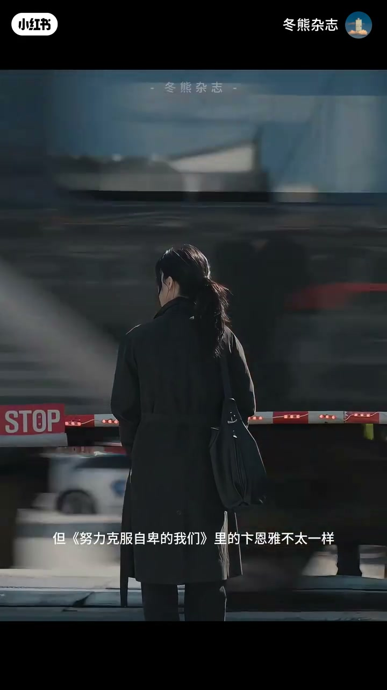
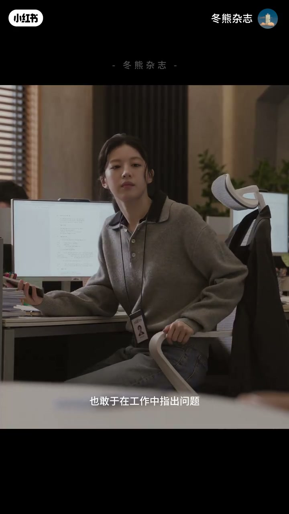
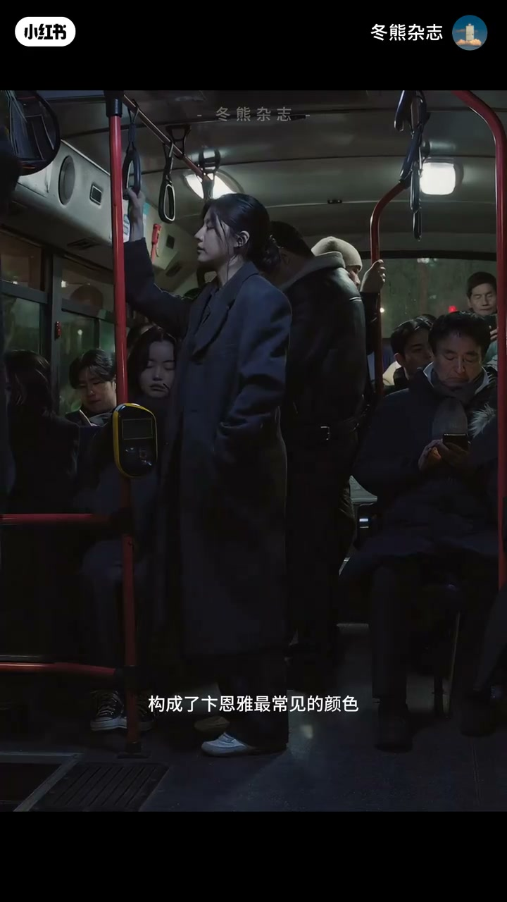
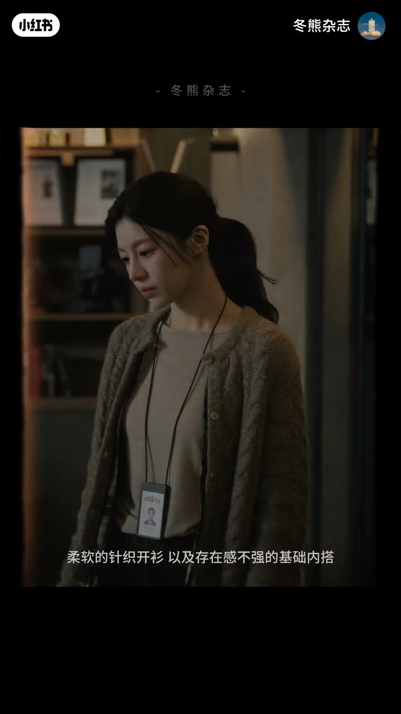
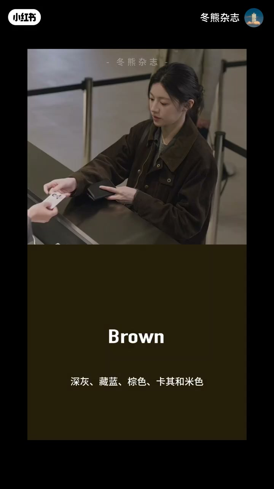
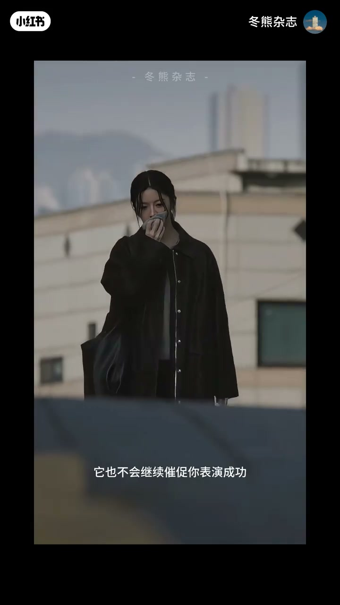

内容要点
很多职场剧喜欢把能力「穿」在身上：利落西装、昂贵手表、高跟鞋敲地的声音，都像在广播「我很强、我准备好了、我一定会赢」。韩剧《努力克服自卑的我们》里的卞恩雅却不太一样——她是被称作「斧头」的犀利制片人，衣服却很少强调攻击性。冬熊借她的穿搭问：当工作无法证明你的价值时，衣服还能为你做什么？答案是低噪：不必继续替你表演成功。
知识结构
职场剧爱用西装手表高跟鞋表演强大；卞恩雅能力硬、外号斧头，穿搭却少攻击性；问题转向衣服能否在工作证伪时托住自我。
她不是没情绪的「淡人」，而是把大量情绪压进低音量外壳；工作已无法完整证明价值时，衣服也不必继续表演成功。
深灰黑棕卡其为常见色，少强烈碰撞与急着被看见的装饰；宽松风衣、深色外套、柔软针织与基础内搭，长外套维持安静完整外轮廓。
建立可互搭色组（深灰藏蓝棕卡其米）；内层保留柔软；配饰一只实用包或一条简单围巾即可。通勤衣是不动声色的秩序，不催促表演成功。
低噪通勤不是没态度，而是把锋利判断留给工作，把柔软克制留给衣服：少表演、少装饰、色系互搭、长外套稳住轮廓。工作顺利时它不抢光，工作暂时证伪时它也不逼你假笑成功。
00:00-00:35职场剧的表演成功，与卞恩雅的例外
很多职场剧喜欢把一个人的能力穿在身上：利落西装代表专业，昂贵手表对应职位，高跟鞋落在办公室地面的声音都像在告诉所有人——他很强、准备好了、一定会赢。
但《努力克服自卑的我们》里的卞恩雅不太一样。她明明是电影公司制片人，凭犀利剧本审阅能力被业内称作「斧头」，衣服却很少强调攻击性。冬熊由此抛出问题：当工作无法证明你的价值时，衣服还能为你做什么？

00:35-01:01不是淡人：情绪压进低音量外壳
卞恩雅并不是没有能力：有明确判断，也敢于在工作中指出问题。但即便如此，她依然无法只凭工作填补对自我价值的怀疑。
所以她不是通常理解的「淡人」——不是没有情绪，而是把大量情绪压进一个低音量的外壳里。这种低音量也出现在衣服上：当工作已经无法完整证明一个人的价值，衣服也不必继续替我们表演成功。

01:01-01:37低饱和色与柔软职业轮廓
深灰、黑色、棕色和卡其构成她最常见的颜色：很少强烈碰撞，也没有太多急着被看见的装饰。比起传统职场剧里轮廓锋利的西装，她更常穿宽松风衣、深色外套、柔软针织开衫与存在感不强的基础内搭。
尤其是那些长外套，能适应办公室、街道、咖啡店和临时会面，也让人在不同场景之间移动时始终维持完整、安静的外轮廓；内层针织与基础款，又让职业感不至于变成一层坚硬盔甲——衣服柔软克制，人却有锋利清醒的判断。


01:37-02:30可复刻色组：秩序感，而非永远自信的包装
不必照搬剧中同款。可以先建立一组能够互相搭配的颜色：深灰、藏蓝、棕色、卡其和米色，已足够应对大部分工作日。内层保留柔软，用薄针织或简单上衣照顾身体；配饰也不需要每一件都在表达风格——一只实用的包、一条简单的围巾，就可以成为亮点。
真正适合长期通勤的衣服，从来不是把我们包装成永远自信、永远有野心的人；它更像一层不动声色的秩序。工作顺利时不抢走你的光；工作暂时无法证明你时，也不会继续催促你表演成功——只是让你在有些疲惫、有些怀疑自己的早晨，仍然可以舒服清楚地穿好衣服，然后继续自己的这一天。


完整转录（76段）
以下文本由 Whisper medium 模型自动转录，可能存在少量识别误差，已尽可能修正。
很多职场剧都喜欢把一个人的能力穿在身上
利落的西装代表专业
昂贵的手带对应职位
就连高跟鞋落在办公室地面的声音
都像是在告诉所有人
他很强
他准备好了
他一定会赢
但努力克服自卑的我们里的贝恩雅
不太一样
她明明是电影公司的制片人
凭借犀利的剧本审阅能力
被业内称作斧头
可她的衣服却很少强调攻击性
大家好
我是东雄
今天想通过贝恩雅的穿搭
聊聊一个听起来有点奇怪的问题
当工作无法证明你的价值时
衣服还能为你做什么
贝恩雅并不是没有能力
她有明确的判断
也敢于在工作中指出问题
但即便如此
她依然无法只凭工作
填补内心对于自我价值的怀疑
所以我觉得
她不是我们通常理解的蛋人
她不是没有情绪
而是把大量情绪
压进了一个低音量的外壳里
这种低音量也出现在她的衣服上
当工作已经无法完整证明一个人的价值
衣服也不必继续替我们表演成功
深灰 黑色 棕色和卡其
构成了贝恩雅最常见的颜色
她们之间很少发生强烈碰撞
也没有太多急着被看见的装饰
比起传统职场距离轮廓锋利的西装
她更常穿宽松风衣
深色外套
柔软的针织开衫
以及存在感不强的基础内搭
尤其是那些长外套
她们能适应办公室 街道
咖啡店和临时会面
也让人在不同场景之间移动时
始终维持着一个完整 安静的外轮廓
而内层的针织与基础款
又让这种职业感不至于变成一层坚硬的盔甲
对于贝恩雅来说
衣服是柔软而克制的
人却有锋利 清醒的判断
我们不必照搬剧中的同款
可以先建立一组能够互相搭配的颜色
深灰 藏蓝 棕色 卡其和米色
已经足够应对大部分工作日
内层可以保留柔软
用薄针织或简单上衣照顾身体
配饰也不需要每一件都在表达风格
一只实用的包包
一条简单的围巾
就可以成为整套穿搭的亮点
真正适合长期通勤的衣服
从来不是把我们包装成一个
永远自信 永远有野心的人
它更像是一层不动声色的秩序
当工作顺利时
它不抢走你的光
当工作暂时无法证明你时
它也不会继续催促你表演成功
它只是让你
在有些疲惫
有些怀疑自己的早晨
仍然可以舒服 清楚地穿好衣服
然后继续自己的这一天